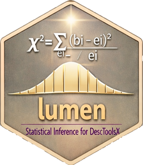

Confidence Intervals for the Difference of Two Paired Binomial Proportions
Source:R/binomPairedDiffCI.R
binomPairedDiffCI.RdComputes confidence intervals for the difference between two binomial proportions measured on the same subjects (matched pairs), e.g. the accuracies of two classifiers on the same observations, or a binary outcome before and after a treatment.
Arguments
- x
a 2x2 table or matrix of paired counts as above (the first measurement in the rows, the second in the columns, success first), or a logical or 0/1 vector of the first measurement's outcomes when
yis given.- y
NULL(default) ifxis a table, else a logical or 0/1 vector of the second measurement's outcomes, of the same length asxand with the pairs in the same order.- conf.level
confidence level, default is 0.95.
- sides
a character string specifying the type of confidence interval:
"two.sided"(default),"left", or"right". Partial matching is allowed.- method
one or several of
"tango","newcombe-score","bonett-price","agresti-min","wald","wald-cc".- na.rm
logical, whether pairs with a missing value in
xoryare removed. With the defaultFALSEsuch pairs make the resultNA.
Value
If a single method and level are requested, a named numeric vector with elements:
estpoint estimate of the difference of the paired proportions, \((n_{12} - n_{21})/N\).
lcilower confidence interval bound.
uciupper confidence interval bound.
Otherwise a data frame with one row per method and level; its first three
columns are est, lci, and uci, the remaining ones contain the
recycled argument values.
Details
The data form a paired 2x2 table
| second: success | second: failure | |
| first: success | \(n_{11}\) | \(n_{12}\) |
| first: failure | \(n_{21}\) | \(n_{22}\) |
with \(N\) pairs. The difference of the two success proportions is
estimated by
$$
\hat{\delta} = \hat{p}_{1+} - \hat{p}_{+1} = \frac{n_{12} - n_{21}}{N},
$$
so only the discordant pairs \(n_{12}\) and \(n_{21}\) move the
estimate, while the concordant pairs determine its precision. Treating the
two proportions as independent (binomDiffCI()) ignores this correlation
and gives intervals of the wrong width, usually far too wide.
Tango asymptotic score (default): Inverts the score test for \(\delta\), with the nuisance parameter estimated by restricted maximum likelihood under each tested value (Tango, 1998). The paired counterpart of the Miettinen-Nurminen interval.
Newcombe hybrid score: Combines the Wilson score intervals of the two marginal proportions, accounting for their correlation (Newcombe, 1998, method 10). The correlation estimate is corrected towards zero for small positive values, as proposed there.
Bonett-Price: A Wald interval centred at the Laplace-adjusted estimates of the discordant probabilities, \((n_{12} + 1)/(N + 2)\) and \((n_{21} + 1)/(N + 2)\) (Bonett and Price, 2012).
Agresti-Min: A Wald interval after adding 1/2 to each of the four cells (Agresti and Min, 2005).
Wald and Wald with continuity correction: The large-sample normal approximation, the corrected version with the discordance reduced by one in the variance, as in Fagerland et al. (2014). Both are degenerate (zero width) without discordant pairs and are not recommended.
Limits outside the admissible range \([-1, 1]\) are truncated.
Which interval should be used?
Fagerland, Lydersen and Laake (2014) recommend the Tango asymptotic score,
the Newcombe hybrid score and the Bonett-Price interval for general use;
the Wald intervals perform poorly.
References
Agresti A, Min Y (2005). Simple improved confidence intervals for comparing matched proportions. Statistics in Medicine, 24, 729-740.
Bonett DG, Price RM (2012). Adjusted Wald confidence interval for a difference of binomial proportions based on paired data. Journal of Educational and Behavioral Statistics, 37, 479-488.
Fagerland MW, Lydersen S, Laake P (2014). Recommended tests and confidence intervals for paired binomial proportions. Statistics in Medicine, 33, 2850-2875.
Newcombe RG (1998). Improved confidence intervals for the difference between binomial proportions based on paired data. Statistics in Medicine, 17, 2635-2650.
Tango T (1998). Equivalence test and confidence interval for the difference in proportions for the paired-sample design. Statistics in Medicine, 17, 891-908.
See also
binomDiffCI() for independent proportions,
mcnemar.test() for the corresponding test
Other ci.proportion:
binomCI(),
binomDiffCI(),
binomRatioCI(),
hyperCI(),
multinomCI()
Examples
# Airway hyper-responsiveness before and after stem cell transplantation
# (Bentur et al., 2009, from Fagerland et al., 2014)
tab <- matrix(c(1, 7, 1, 12), nrow = 2,
dimnames = list(before = c("yes", "no"),
after = c("yes", "no")))
binomPairedDiffCI(tab)
#> est lci uci
#> -0.28571429 -0.51723228 -0.02600303
binomPairedDiffCI(tab, method = c("tango", "newcombe-score",
"bonett-price", "agresti-min",
"wald", "wald-cc"))
#> est lci uci conf.level sides method
#> 1 -0.2857143 -0.5172323 -0.02600303 0.95 two.sided tango
#> 2 -0.2857143 -0.5069202 -0.02555912 0.95 two.sided newcombe-score
#> 3 -0.2857143 -0.5083593 -0.01337982 0.95 two.sided bonett-price
#> 4 -0.2857143 -0.4932258 -0.02851330 0.95 two.sided agresti-min
#> 5 -0.2857143 -0.5197090 -0.05171954 0.95 two.sided wald
#> 6 -0.2857143 -0.5292637 -0.04216483 0.95 two.sided wald-cc
# accuracies of two classifiers on the same observations
set.seed(1)
ok1 <- rbinom(200, 1, 0.85) == 1
ok2 <- ifelse(runif(200) < 0.8, ok1, rbinom(200, 1, 0.8) == 1)
binomPairedDiffCI(ok1, ok2)
#> est lci uci
#> 0.025000000 -0.008846153 0.064132112
# one-sided: is the first at least as accurate as the second?
binomPairedDiffCI(ok1, ok2, conf.level = 0.95, sides = "left")
#> est lci uci
#> 0.025000000 -0.002568594 1.000000000